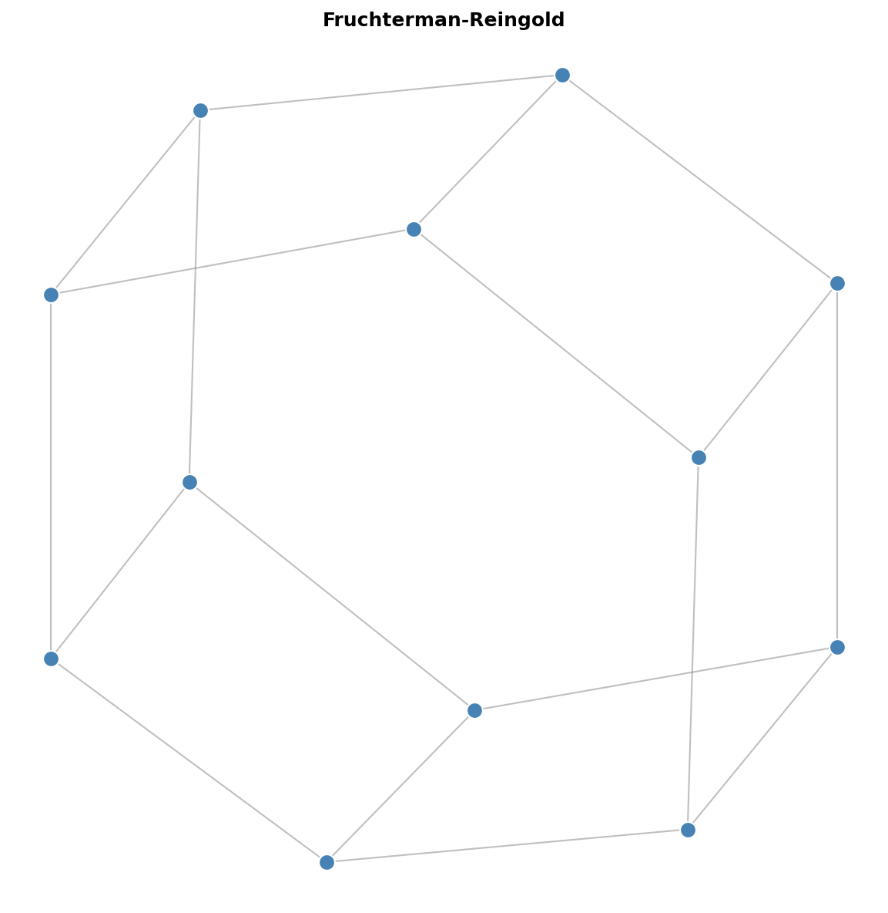
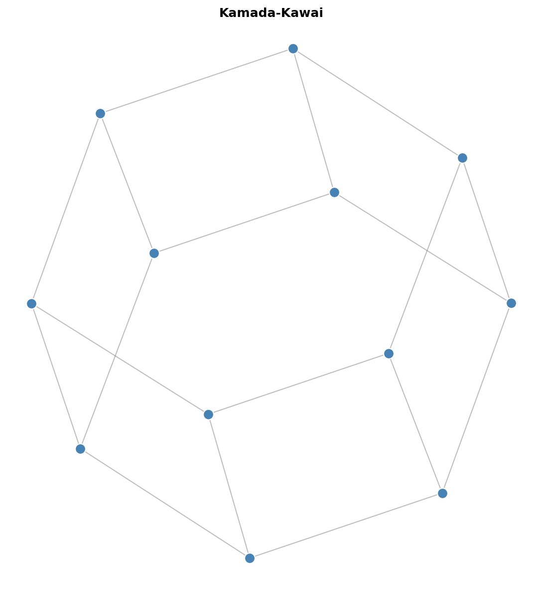
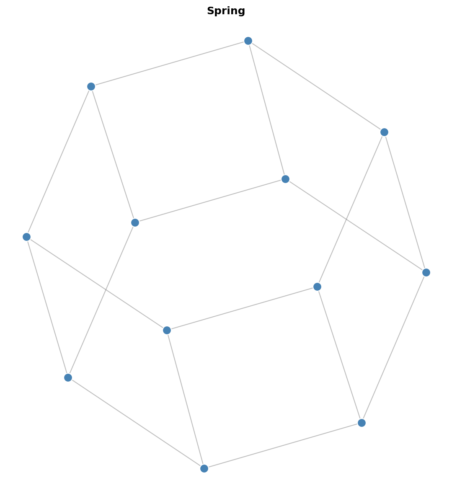
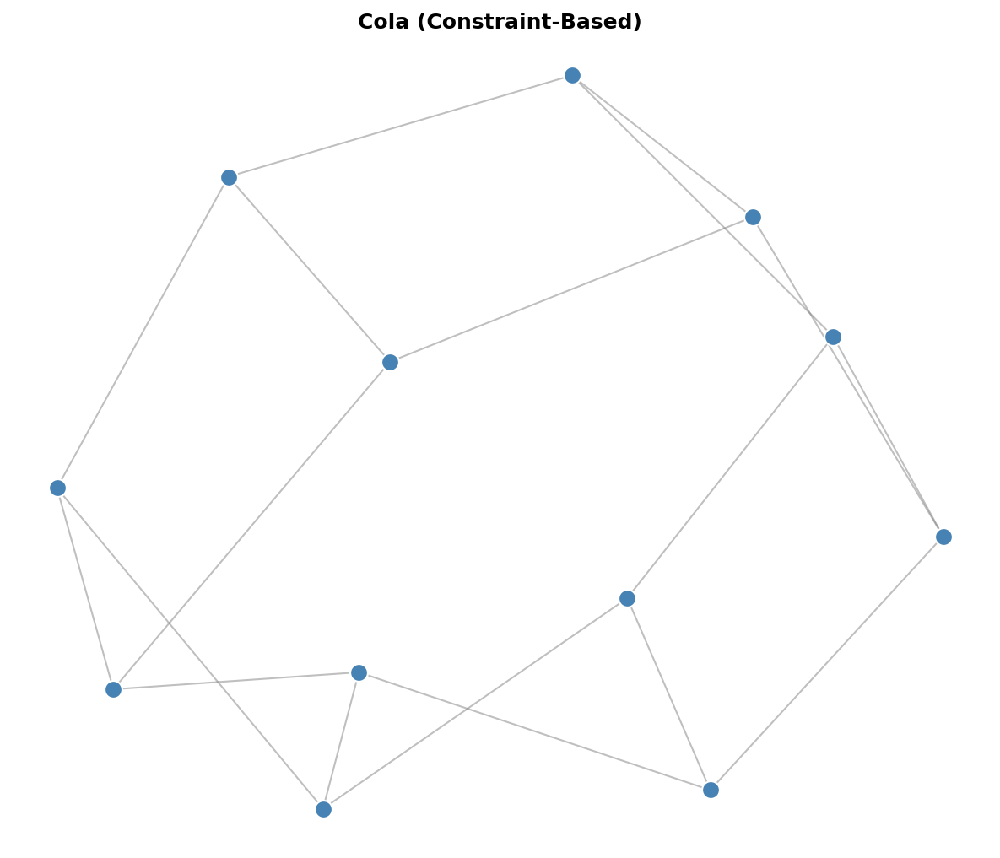
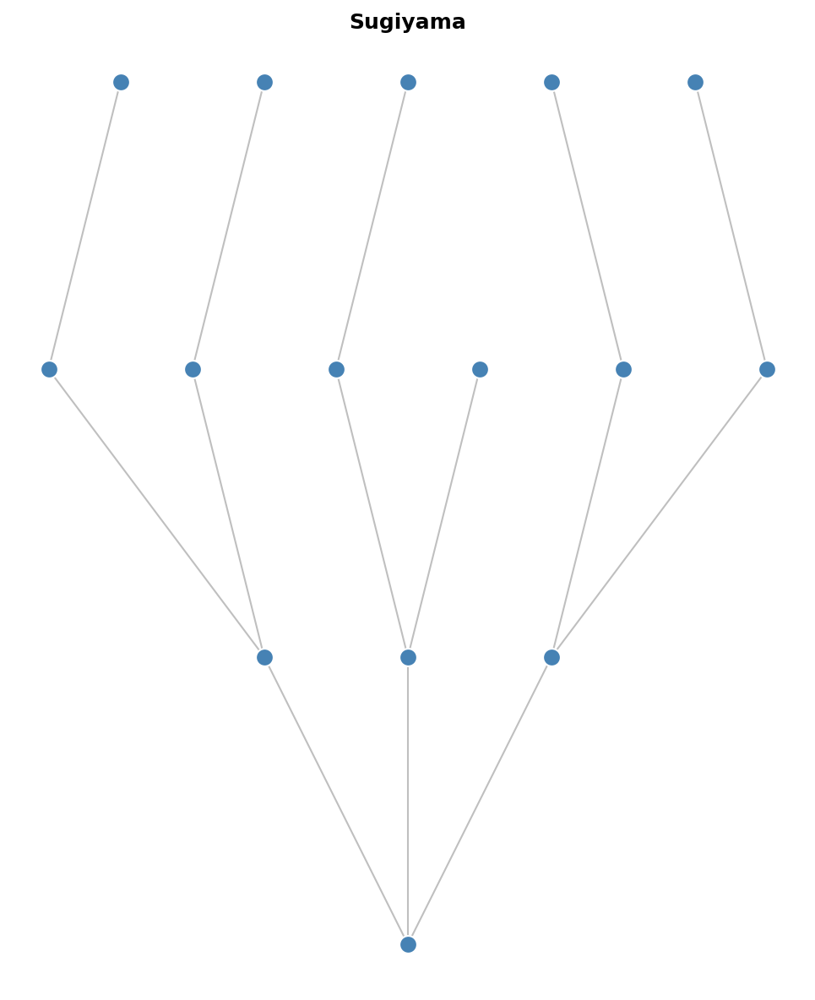
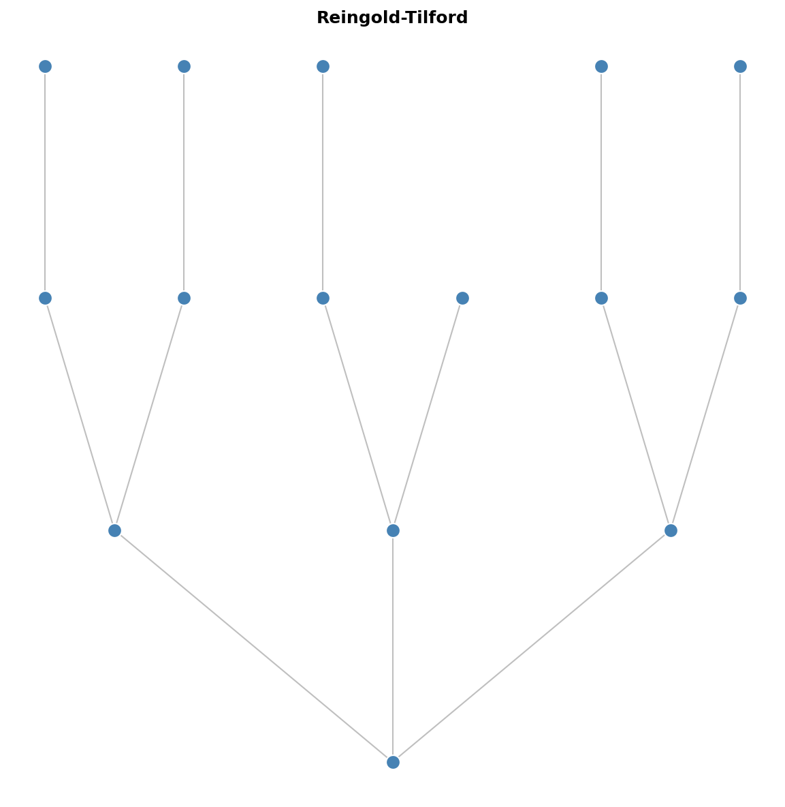
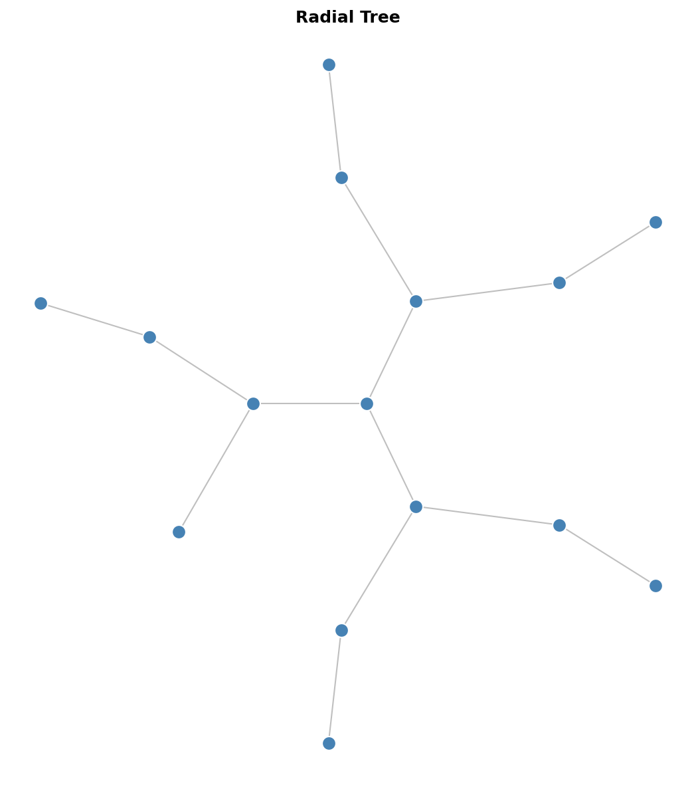
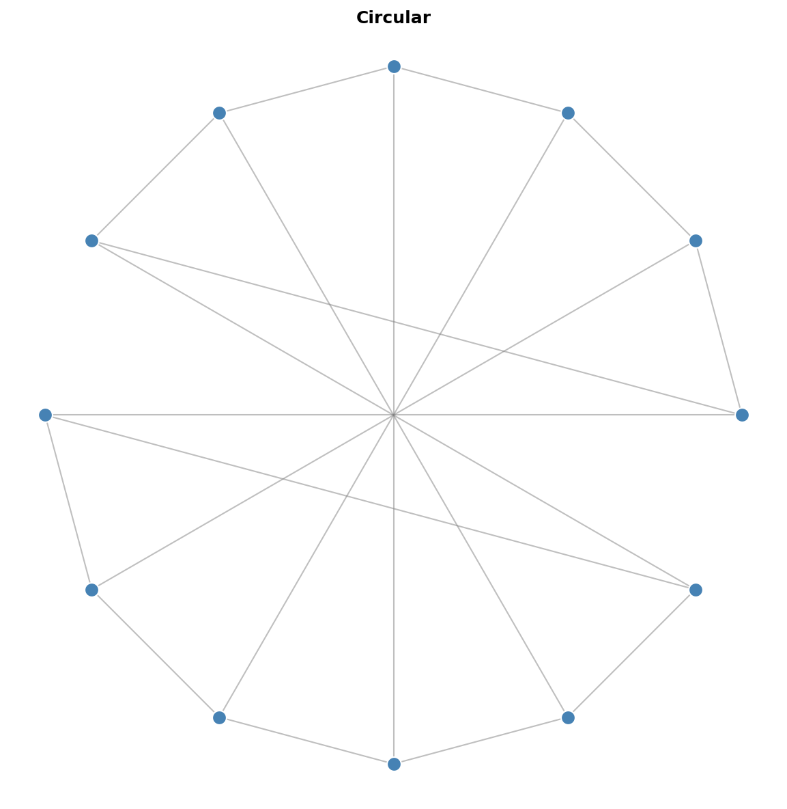
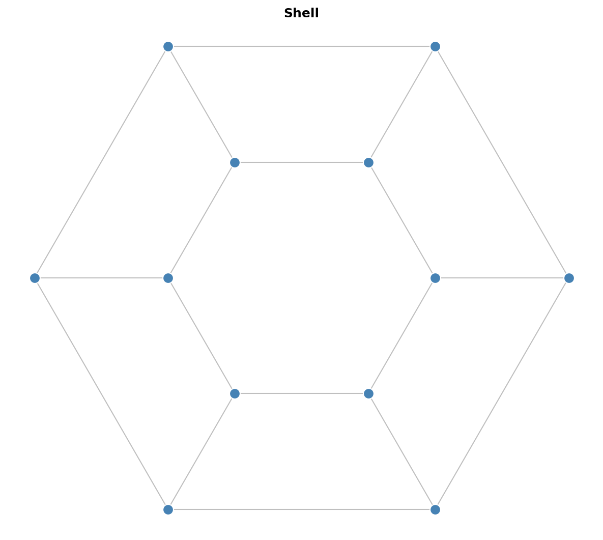
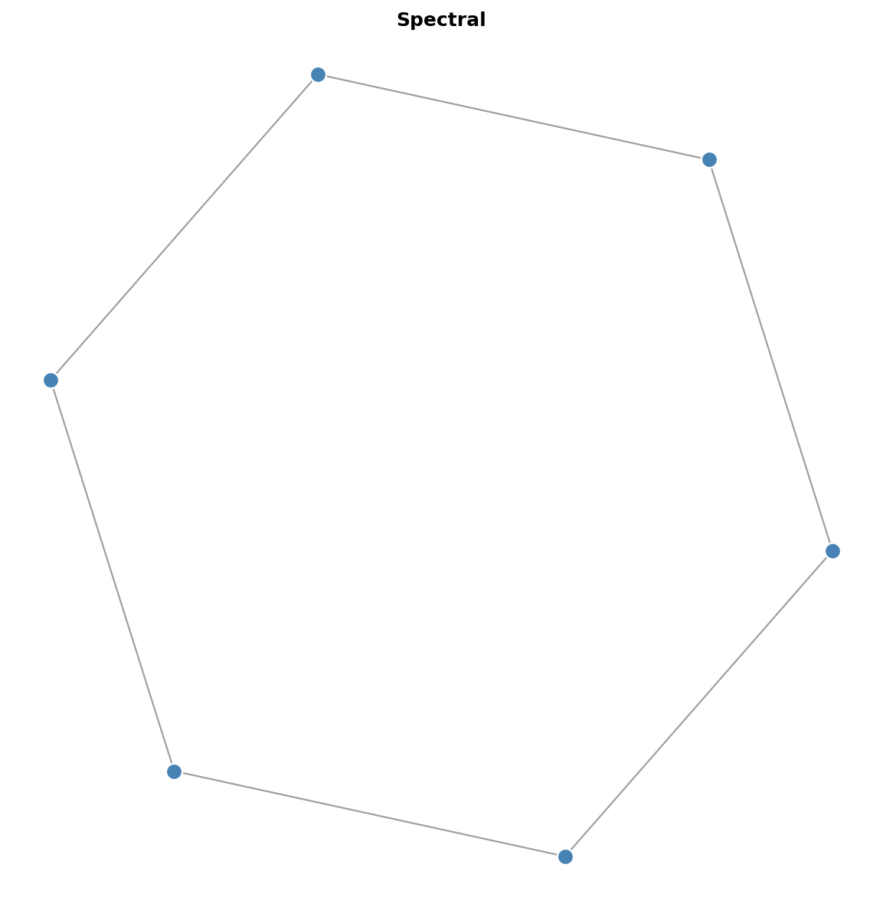

Graph Layout Algorithms Guide¶
This guide explains the different graph layout algorithms available in graph-layout, their characteristics, and when to use each one.
Algorithm Families¶
| Family | Algorithms | Approach |
|---|---|---|
| Force-Directed | Fruchterman-Reingold, Kamada-Kawai, Spring | Simulate physical forces between nodes |
| Constraint-Based | Cola | Optimize with constraints and overlap avoidance |
| Hierarchical | Sugiyama, Reingold-Tilford, Radial Tree | Layer-based or tree-structured layouts |
| Circular | Circular, Shell | Arrange nodes on circles |
| Spectral | Spectral | Use graph eigenvalues for positioning |
| Orthogonal | Kandinsky, GIOTTO | Route edges with horizontal/vertical segments |
| Planar | Schnyder, FPP, Tutte, Mixed-Model, Planarization | Crossing-free straight-line/visibility drawings of planar graphs |
Force-Directed Layouts¶
Force-directed algorithms simulate a physical system where nodes repel each other (like charged particles) and edges act as springs pulling connected nodes together. The layout converges when forces reach equilibrium.
Fruchterman-Reingold¶
Best for: General-purpose graph visualization with aesthetic results.

from graph_layout import FruchtermanReingoldLayout
layout = FruchtermanReingoldLayout(
nodes=nodes,
links=links,
size=(800, 600),
iterations=300,
temperature=None, # Auto-calculated if None
cooling_factor=0.95, # Temperature decay per iteration
)
layout.run()
Characteristics:
-
Uses temperature/cooling schedule for simulated annealing
-
Repulsive force:
k^2 / d(inverse of distance) -
Attractive force:
d^2 / k(quadratic with distance) -
Cython-accelerated for high performance
Complexity: O(n^2) per iteration (or O(n log n) with Barnes-Hut)
Parameters:
| Parameter | Description | Default |
|---|---|---|
iterations |
Number of simulation steps | 300 |
temperature |
Initial max displacement | Auto |
cooling_factor |
Temperature multiplier per step | 0.95 |
use_barnes_hut |
Enable O(n log n) approximation | False |
barnes_hut_theta |
Accuracy vs speed (0=exact, 1=fast) | 0.5 |
When to use Barnes-Hut:
-
Graphs with 2000+ nodes
-
When approximate positions are acceptable
-
Real-time or interactive applications
Kamada-Kawai¶
Best for: Small to medium graphs where edge lengths should reflect graph-theoretic distances.

from graph_layout import KamadaKawaiLayout
layout = KamadaKawaiLayout(
nodes=nodes,
links=links,
size=(800, 600),
iterations=100,
)
layout.run()
Characteristics:
-
Minimizes stress: deviation between geometric and graph-theoretic distances
-
Computes all-pairs shortest paths (expensive for large graphs)
-
Produces layouts where edge length correlates with path length
-
Good for revealing graph structure
Complexity: O(n^3) for shortest paths + O(n^2) per iteration
Parameters:
| Parameter | Description | Default |
|---|---|---|
iterations |
Number of optimization steps | 100 |
epsilon |
Convergence threshold | 1e-4 |
Trade-offs:
-
Higher quality than Fruchterman-Reingold for small graphs
-
Much slower for large graphs due to all-pairs shortest paths
-
Best limited to graphs under ~200 nodes
Spring Layout¶
Best for: Simple layouts, educational purposes, or as a baseline.

from graph_layout import SpringLayout
layout = SpringLayout(
nodes=nodes,
links=links,
size=(800, 600),
iterations=100,
spring_length=100, # Ideal edge length
spring_strength=0.1, # Spring constant
repulsion=1000, # Repulsion strength
)
layout.run()
Characteristics:
-
Simple Hooke's law springs for edges
-
Coulomb-like repulsion between all node pairs
-
No cooling schedule (constant forces)
-
Easy to understand and modify
Complexity: O(n^2) per iteration
Parameters:
| Parameter | Description | Default |
|---|---|---|
iterations |
Number of simulation steps | 100 |
spring_length |
Ideal edge length | 100 |
spring_strength |
Edge spring constant | 0.1 |
repulsion |
Node repulsion strength | 1000 |
damping |
Velocity damping factor | 0.5 |
Constraint-Based Layout (Cola)¶
ColaLayoutAdapter¶
Best for: Layouts requiring constraints, overlap avoidance, or hierarchical grouping.

from graph_layout import ColaLayoutAdapter
layout = ColaLayoutAdapter(
nodes=nodes,
links=links,
avoid_overlaps=True,
link_distance=100,
iterations=50,
)
layout.run()
Characteristics:
-
Port of WebCola constraint-based layout
-
VPSC solver for separation constraints
-
Supports node overlap avoidance
-
Hierarchical group containment
-
Flow layouts (directional bias)
Complexity: O(n^2) per iteration + constraint solving overhead
Parameters:
| Parameter | Description | Default |
|---|---|---|
iterations |
Layout iterations | 50 |
link_distance |
Ideal edge length (number or function) | 100 |
avoid_overlaps |
Prevent node overlap | False |
handle_disconnected |
Layout disconnected components | True |
convergence_threshold |
Stop when stress change below this | 1e-4 |
Advanced Features:
# Separation constraints
from graph_layout.cola.linklengths import SeparationConstraint
constraint = SeparationConstraint(axis='x', left=0, right=1, gap=50)
layout = ColaLayoutAdapter(
nodes=nodes,
links=links,
constraints=[constraint],
)
# Hierarchical groups
groups = [
{'leaves': [0, 1, 2], 'padding': 10},
{'leaves': [3, 4], 'padding': 10},
]
layout = ColaLayoutAdapter(
nodes=nodes,
links=links,
groups=groups,
)
# Flow layout (left-to-right)
layout = ColaLayoutAdapter(
nodes=nodes,
links=links,
flow_direction='x', # or 'y' for top-to-bottom
)
Hierarchical Layouts¶
Sugiyama Layout¶
Best for: Directed acyclic graphs (DAGs), flowcharts, dependency graphs.

from graph_layout import SugiyamaLayout
layout = SugiyamaLayout(
nodes=nodes,
links=links,
size=(800, 600),
layer_separation=80,
node_separation=50,
)
layout.run()
Characteristics:
-
Assigns nodes to horizontal layers
-
Minimizes edge crossings between layers
-
Produces clean, readable hierarchical layouts
-
Handles cycles by temporarily reversing edges
Complexity: O(n^2) for crossing minimization
Parameters:
| Parameter | Description | Default |
|---|---|---|
layer_separation |
Vertical space between layers | 80 |
node_separation |
Horizontal space between nodes | 50 |
direction |
Layout direction ('TB', 'BT', 'LR', 'RL') | 'TB' |
Reingold-Tilford Layout¶
Best for: Trees and hierarchical structures.

from graph_layout import ReingoldTilfordLayout
layout = ReingoldTilfordLayout(
nodes=nodes,
links=links,
size=(800, 600),
root=0, # Root node index
)
layout.run()
Characteristics:
-
Classic tree drawing algorithm
-
Compact, balanced layouts
-
Preserves tree structure clearly
-
Requires a tree (single root, no cycles)
Complexity: O(n)
Parameters:
| Parameter | Description | Default |
|---|---|---|
root |
Index of root node | 0 |
node_separation |
Horizontal space between siblings | 1.0 |
level_separation |
Vertical space between levels | 1.0 |
Radial Tree Layout¶
Best for: Trees displayed as concentric circles from a central root.

from graph_layout import RadialTreeLayout
layout = RadialTreeLayout(
nodes=nodes,
links=links,
size=(800, 800),
root=0,
)
layout.run()
Characteristics:
-
Root at center, children in concentric rings
-
Good for visualizing distance from root
-
Works best with roughly balanced trees
Complexity: O(n)
Parameters:
| Parameter | Description | Default |
|---|---|---|
root |
Index of root node | 0 |
level_separation |
Radial distance between levels | 100 |
Circular Layouts¶
Circular Layout¶
Best for: Showing connectivity patterns, ring topologies, complete graphs.

from graph_layout import CircularLayout
layout = CircularLayout(
nodes=nodes,
links=links,
size=(800, 800),
sort_by='degree', # Order nodes by degree
)
layout.run()
Characteristics:
-
All nodes placed on a single circle
-
Simple and predictable
-
Edge crossings can be minimized by node ordering
-
Good for small to medium dense graphs
Complexity: O(n)
Parameters:
| Parameter | Description | Default |
|---|---|---|
sort_by |
Node ordering ('none', 'degree', or callable) | 'none' |
start_angle |
Starting angle in radians | 0 |
Shell Layout¶
Best for: Grouped or stratified data, showing node importance.

from graph_layout import ShellLayout
# Automatic shells by degree
layout = ShellLayout(
nodes=nodes,
links=links,
size=(800, 800),
auto_shells=3, # Number of concentric circles
)
# Manual shell assignment
layout = ShellLayout(
nodes=nodes,
links=links,
shells=[[0, 1, 2], [3, 4, 5], [6, 7, 8]], # Node indices per shell
)
layout.run()
Characteristics:
-
Multiple concentric circles
-
Can group nodes by degree or custom criteria
-
Inner shells typically for important/central nodes
Complexity: O(n)
Parameters:
| Parameter | Description | Default |
|---|---|---|
shells |
List of node index lists per shell | None |
auto_shells |
Auto-generate shells by degree | None |
Spectral Layout¶
Spectral Layout¶
Best for: Revealing cluster structure, dimensionality reduction.

from graph_layout import SpectralLayout
layout = SpectralLayout(
nodes=nodes,
links=links,
size=(800, 600),
normalized=True, # Use normalized Laplacian
)
layout.run()
Characteristics:
-
Uses eigenvectors of the graph Laplacian matrix
-
Positions based on graph's spectral properties
-
Often reveals natural clustering
-
Deterministic (same graph = same layout)
Complexity: O(n^3) for eigendecomposition
Parameters:
| Parameter | Description | Default |
|---|---|---|
normalized |
Use normalized Laplacian | True |
dimensions |
Number of dimensions (2 or 3) | 2 |
Trade-offs:
-
Good at revealing structure but may not be visually optimal
-
Expensive for large graphs
-
Best for graphs under ~500 nodes
Planar Layouts¶
Crossing-free drawings of planar graphs. All draw any connected planar simple graph (>= 3 vertices) — internally triangulating and reusing one embedding/canonical-ordering substrate — and fall back to a circular placement for out-of-domain input, reporting the path taken via a used_* flag.
Schnyder / FPP / Tutte (straight-line)¶
Straight-line grid drawings. SchnyderLayout uses a realizer with vertex-count barycentric coordinates on the (n-1) x (n-1) grid; FPPLayout uses the de Fraysseix-Pach-Pollack shift method on the (2n-4) x (n-2) grid; TutteLayout fixes one face to a convex polygon and solves the barycentric equilibrium, giving convex faces for 3-connected planar graphs.
from graph_layout import SchnyderLayout
layout = SchnyderLayout(nodes=nodes, links=links, size=(800, 600))
layout.run()
assert layout.used_schnyder # False if the graph was non-planar/disconnected
Use when: you want a compact, provably crossing-free drawing of a planar graph and prefer straight edges. Prefer Tutte for 3-connected graphs where convex faces matter.
Mixed-Model (visibility representation)¶
Draws vertices as horizontal bars and edges as bendless vertical segments attaching at distinct ports, spreading a high-degree vertex's edges across its bar for good angular resolution. Exposes vertex_bars and edge_routes.
Use when: the graph has high-degree vertices whose edges would be cramped in a straight-line drawing.
Planarization (non-planar input)¶
Draws a non-planar graph by replacing crossings with dummy vertices, then routing each edge as a polyline through its crossing points, so edges meet only at explicit crossing dots. Exposes crossings, crossing_count, and edge_routes.
Use when: the graph is non-planar but you still want a clean drawing with a small, explicit set of crossings.
Algorithm Comparison¶
| Algorithm | Complexity | Best Graph Size | Constraints | Overlap Avoidance | Deterministic |
|---|---|---|---|---|---|
| Fruchterman-Reingold | O(n^2)/iter | Any | No | No | No |
| FR + Barnes-Hut | O(n log n)/iter | Large (2000+) | No | No | No |
| Kamada-Kawai | O(n^3) + O(n^2)/iter | Small (<200) | No | No | No |
| Spring | O(n^2)/iter | Small-Medium | No | No | No |
| Cola | O(n^2)/iter | Medium | Yes | Yes | No |
| Sugiyama | O(n^2) | Medium DAGs | Layering | Via spacing | Yes |
| Reingold-Tilford | O(n) | Any tree | Tree structure | Via spacing | Yes |
| Radial Tree | O(n) | Any tree | Tree structure | Via spacing | Yes |
| Circular | O(n) | Small-Medium | Circle | No | Yes |
| Shell | O(n) | Small-Medium | Concentric | No | Yes |
| Spectral | O(n^3) | Small (<500) | No | No | Yes |
| Schnyder / FPP | O(n^2) | Planar, any size | Planar | Grid points | Yes |
| Tutte | O(n^3) solve | 3-connected planar | Planar | Convex faces | Yes |
| Mixed-Model | O(n^2) | Planar (esp. high-degree) | Planar | Bars/ports | Yes |
| Planarization | O((n+c)^2) | Non-planar | None | Explicit crossings | Yes |
Decision Guide¶
Choose based on graph type¶
Is your graph a tree?
Yes -> Reingold-Tilford (classic) or Radial Tree (centered)
No -> Continue...
Is your graph a DAG (directed, no cycles)?
Yes -> Sugiyama (layered hierarchy)
No -> Continue...
Do you need constraints or overlap avoidance?
Yes -> Cola
No -> Continue...
Is your graph large (>1000 nodes)?
Yes -> Fruchterman-Reingold with Barnes-Hut
No -> Continue...
Do you want to reveal cluster structure?
Yes -> Spectral
No -> Continue...
Do you want nodes on a circle?
Yes -> Circular or Shell
No -> Fruchterman-Reingold (general purpose)
Choose based on requirements¶
| Requirement | Recommended Algorithm |
|---|---|
| General-purpose, good aesthetics | Fruchterman-Reingold |
| Edge lengths reflect distances | Kamada-Kawai |
| Prevent node overlap | Cola |
| Hierarchical/layered display | Sugiyama |
| Tree visualization | Reingold-Tilford |
| Very large graphs (5000+) | FR + Barnes-Hut |
| Deterministic layout | Circular, Spectral, or hierarchical |
| Real-time/interactive | FR + Barnes-Hut or Spring |
| Reveal clustering | Spectral |
| Crossing-free planar drawing | Schnyder / FPP (straight-line), Tutte (convex) |
| Planar graph with high-degree nodes | Mixed-Model |
| Non-planar with few, explicit crossings | Planarization |
| Orthogonal (UML/ER/flowchart) | Kandinsky, GIOTTO |
Performance Tips¶
-
Use Cython acceleration: Install from PyPI to get pre-built Cython extensions.
-
Enable Barnes-Hut for large graphs:
layout = FruchtermanReingoldLayout(
nodes=nodes, links=links,
use_barnes_hut=True,
barnes_hut_theta=0.5,
)
-
Reduce iterations for previews: Use fewer iterations during interactive exploration, full iterations for final output.
-
Pre-filter large graphs: For very large graphs, consider filtering to show only important nodes/edges.
-
Use appropriate algorithms: Don't use O(n^3) algorithms (Kamada-Kawai, Spectral) on large graphs.